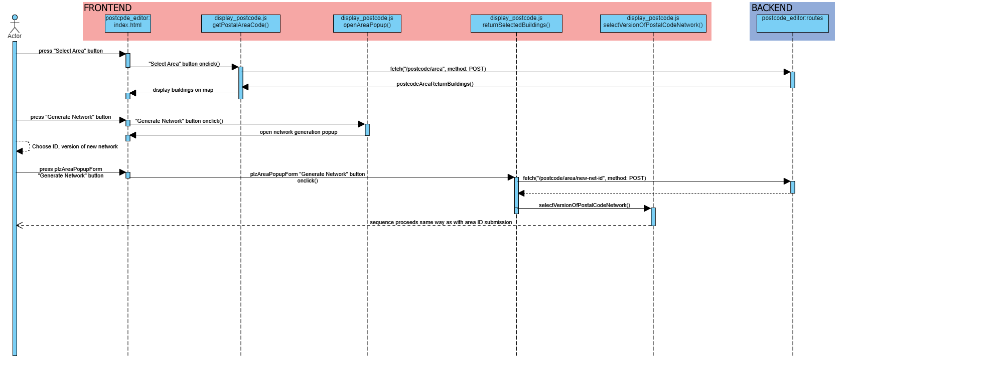

Development
Tool execution flow
Postcode editor
There are two ways program execution can go in the postcode editor window. Either the user decides to request information about already existing networks via a numerical ID or they draw a shape on the map to generate a new grid of networks.
Area selection via ID

Area selection via shape
If the user decides to create a new grid via area selection, the sequence will continue the same way as with network selection via ID once the user has decided to generate the new networks.
Network editor
Setup

Usage

Urbs setup editor
Setup

Usage
New commodity creation

New process creation